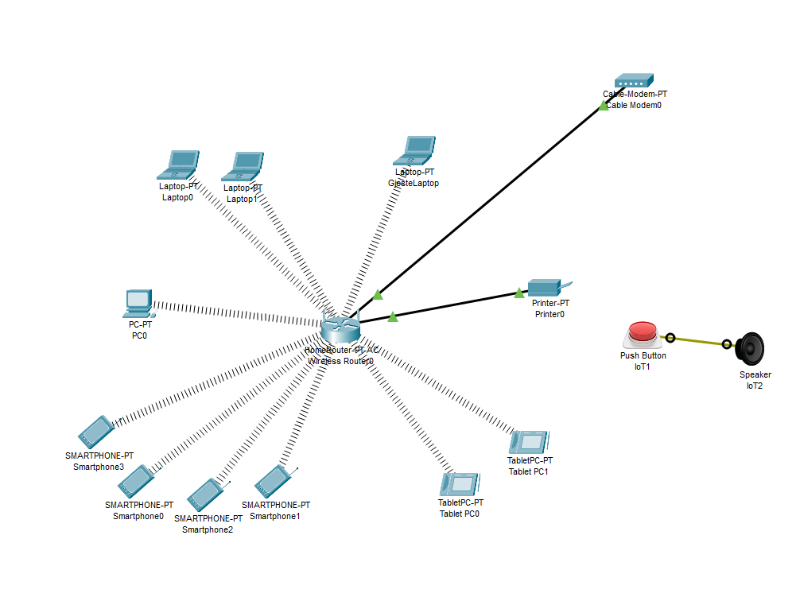

Oppgåve eg gjorde i Cisco Packet Tracer
Oppgåva var å:
Familien skal ha eit trådlaust nettverk for alt som støtter slikt nettverk
Skrivaren skal koplast til ruter med kabel
Sjekk at det er kontakt mellom alt utstyret med PING
Det skal vera eit trådlaust gjestenett for GjesteLaptop. Dette må du konfigurera på ruteren
Internett porten til Ruter skal ha statisk IP 10.0.2.5
Du skal simulera ringeklokke til huset. Det skal då vera mogleg å trykka Push Button slik at Speaker lage lyd
